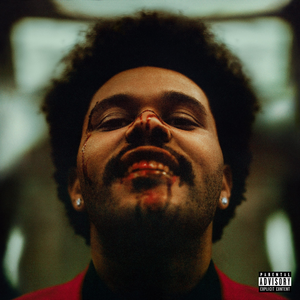
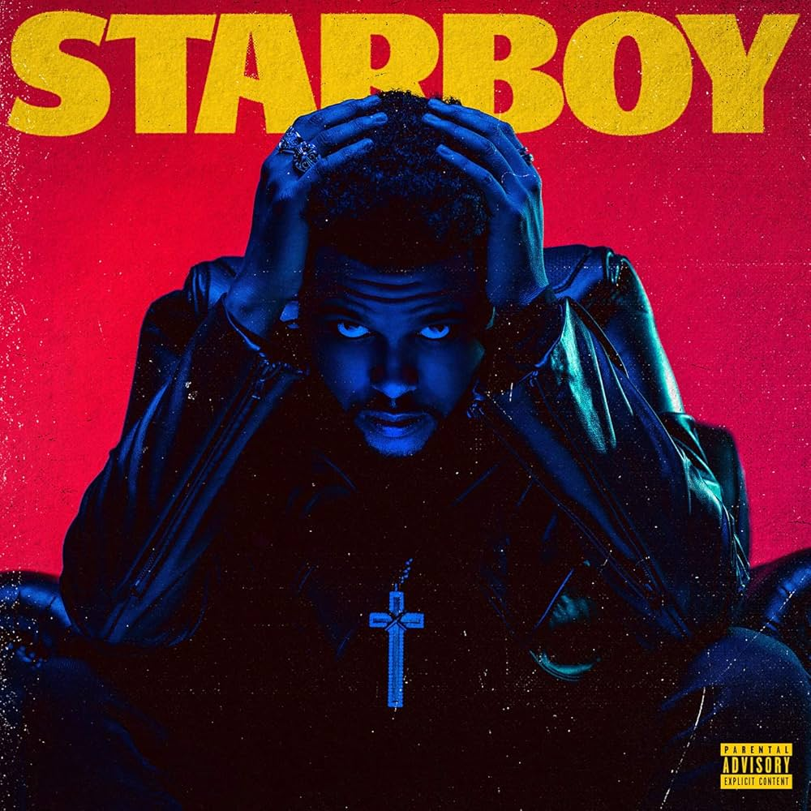

The Weeknd
119M seguidores
Músicas Populares
- Save Your Tears remix
- One Of The Girls
- The Hills
- Heartless
- Prisoner
Álbuns

After Hours

Beauty Behind The Madness

Starboy
Playlists
- This is The Weeknd
- Pop Up
Sobre The Weeknd
Abel Makkonen Tesfaye (Toronto, 16 de fevereiro de 1990), mais conhecido por seu nome artístico The Weeknd, é um cantor, compositor, ator e produtor musical canadense. Conhecido por sua versatilidade sonora e lirismo sombrio, suas músicas exploram temas de escapismo, romance e melancolia, e são frequentemente inspiradas em experiências pessoais. Ele ajudou a expandir a paleta musical do R&B, ao incorporar influências indie e de música eletrônica; seus trabalhos iniciais foram classificados como sendo R&B alternativo.